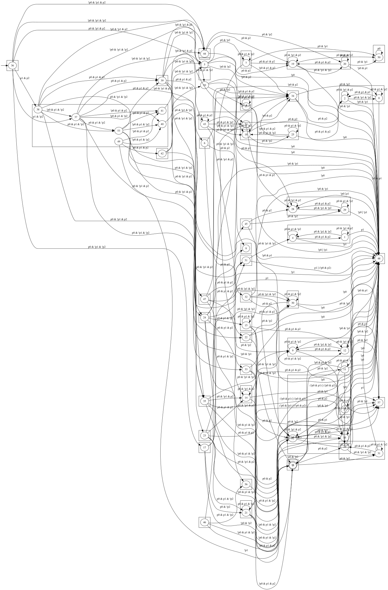
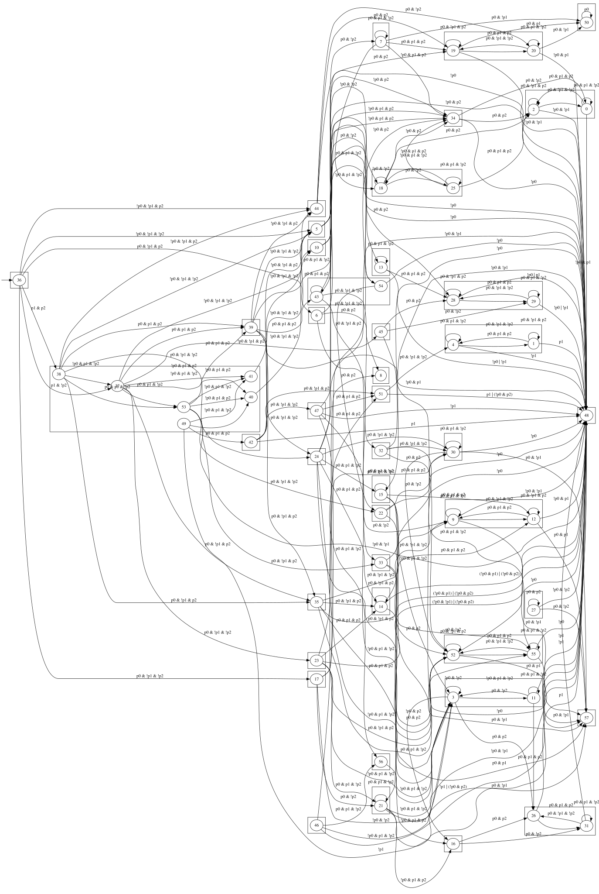

Total layout divergence, oracle in an error-recovery
state. Native dot exits 1 on this graph (trouble in
init_rank network-simplex infeasibility, then a lost edge) and lays out
with overlapping clusters — an OPEN upstream bug
(#2796), xfail(strict=True) in graphviz's own test suite,
linked by the reporter to #2471. The port solves the ranking cleanly and
produces a different (arguably the intended) layout. Mission:
plans/fix-2796-cluster-ranking/.
digraph "troublesome" {
rankdir=LR
node [shape="ellipse",width="0.5",height="0.5"]
I [label="", style=invis, width=0]
I -> 36
subgraph cluster_0 {
label=""
48
}
subgraph cluster_1 {
label=""
2
0
}
subgraph cluster_2 {
label=""
34
}
subgraph cluster_3 {
label=""
18
25
}
subgraph cluster_4 {
label=""
50
}
subgraph cluster_5 {
label=""
19
20
}
subgraph cluster_6 {
label=""
7
}
subgraph cluster_7 {
label=""
5
}
subgraph cluster_8 {
label=""
57
}
subgraph cluster_9 {
label=""
9
12
}
subgraph cluster_10 {
label=""
27
}
subgraph cluster_11 {
label=""
8
}
subgraph cluster_12 {
label=""
6
}
subgraph cluster_13 {
label=""
26
31
}
subgraph cluster_14 {
label=""
16
}
subgraph cluster_15 {
label=""
3
11
}
subgraph cluster_16 {
label=""
21
}
subgraph cluster_17 {
label=""
17
}
subgraph cluster_18 {
label=""
28
29
}
subgraph cluster_19 {
label=""
13
}
subgraph cluster_20 {
label=""
10
}
subgraph cluster_21 {
label=""
14
}
subgraph cluster_22 {
label=""
52
55
}
subgraph cluster_23 {
label=""
30
}
subgraph cluster_24 {
label=""
23
}
subgraph cluster_25 {
label=""
35
}
subgraph cluster_26 {
label=""
15
}
subgraph cluster_27 {
label=""
24
}
subgraph cluster_28 {
label=""
32
}
subgraph cluster_29 {
label=""
33
}
subgraph cluster_30 {
label=""
22
}
subgraph cluster_31 {
label=""
43
54
}
subgraph cluster_32 {
label=""
44
}
subgraph cluster_33 {
label=""
39
}
subgraph cluster_34 {
label=""
4
1
}
subgraph cluster_35 {
label=""
51
}
subgraph cluster_36 {
label=""
56
}
subgraph cluster_37 {
label=""
47
}
subgraph cluster_38 {
label=""
42
}
subgraph cluster_39 {
label=""
45
}
subgraph cluster_40 {
label=""
46
}
subgraph cluster_41 {
label=""
37
40
41
38
53
49
}
subgraph cluster_42 {
label=""
36
}
0 -> 0 [label="p0 & p1 & !p2"]
0 -> 2 [label="p0 & p1 & p2"]
0 -> 48 [label="!p0 & p1"]
1 -> 1 [label="p0 & !p1 & p2"]
1 -> 4 [label="p0 & !p1 & !p2"]
1 -> 48 [label="p1"]
2 -> 0 [label="p0 & !p1 & !p2"]
2 -> 2 [label="p0 & !p1 & p2"]
2 -> 48 [label="!p0 & !p1"]
3 -> 3 [label="!p0 & !p2"]
3 -> 11 [label="p0 & !p2"]
3 -> 16 [label="!p0 & p2"]
3 -> 26 [label="p0 & p2"]
4 -> 1 [label="p0 & p1 & p2"]
4 -> 4 [label="p0 & p1 & !p2"]
4 -> 48 [label="!p1"]
5 -> 7 [label="p0 & !p2"]
5 -> 18 [label="!p0 & !p2"]
5 -> 19 [label="p0 & p2"]
5 -> 34 [label="!p0 & p2"]
6 -> 8 [label="p0 & p2"]
6 -> 9 [label="p0 & !p2"]
6 -> 48 [label="!p0 & p2"]
7 -> 7 [label="p0 & p1 & !p2"]
7 -> 18 [label="!p0 & p1 & !p2"]
7 -> 19 [label="p0 & p1 & p2"]
7 -> 34 [label="!p0 & p1 & p2"]
7 -> 50 [label="p0 & !p1"]
9 -> 9 [label="p0 & p1 & !p2"]
9 -> 12 [label="p0 & p1 & p2"]
9 -> 48 [label="!p0 & !p1"]
9 -> 57 [label="p0 & !p1"]
10 -> 13 [label="p0 & !p2"]
10 -> 28 [label="p0 & p2"]
10 -> 48 [label="!p0"]
11 -> 3 [label="!p0 & p1 & !p2"]
11 -> 11 [label="p0 & p1 & !p2"]
11 -> 26 [label="p0 & p1 & p2"]
11 -> 48 [label="!p1"]
12 -> 9 [label="p0 & !p1 & !p2"]
12 -> 12 [label="p0 & !p1 & p2"]
12 -> 48 [label="!p0 & p1"]
12 -> 57 [label="p0 & p1"]
13 -> 13 [label="p0 & p1 & !p2"]
13 -> 28 [label="p0 & p1 & p2"]
13 -> 48 [label="!p0 | !p1"]
14 -> 9 [label="p0 & !p1 & !p2"]
14 -> 14 [label="p0 & !p1 & p2"]
14 -> 48 [label="(!p0 & p1) | (!p0 & p2)"]
14 -> 57 [label="p0 & p1"]
15 -> 3 [label="!p0 & p1 & !p2"]
15 -> 12 [label="p0 & p1 & p2"]
15 -> 15 [label="p0 & p1 & !p2"]
15 -> 16 [label="!p0 & p1 & p2"]
15 -> 48 [label="!p0 & !p1"]
15 -> 57 [label="p0 & !p1"]
16 -> 26 [label="p0 & p2"]
16 -> 31 [label="p0 & !p2"]
17 -> 3 [label="!p0 & !p2"]
17 -> 8 [label="p0 & p2"]
17 -> 21 [label="p0 & !p2"]
17 -> 34 [label="!p0 & p2"]
18 -> 2 [label="p0 & p2"]
18 -> 18 [label="!p0 & !p2"]
18 -> 25 [label="p0 & !p2"]
18 -> 34 [label="!p0 & p2"]
19 -> 19 [label="p0 & !p1 & p2"]
19 -> 20 [label="p0 & !p1 & !p2"]
19 -> 48 [label="!p0 & !p1"]
19 -> 50 [label="p0 & p1"]
20 -> 19 [label="p0 & p1 & p2"]
20 -> 20 [label="p0 & p1 & !p2"]
20 -> 48 [label="!p0 & p1"]
20 -> 50 [label="p0 & !p1"]
21 -> 3 [label="!p0 & p1 & !p2"]
21 -> 12 [label="p0 & p1 & p2"]
21 -> 16 [label="!p0 & p1 & p2"]
21 -> 21 [label="p0 & p1 & !p2"]
21 -> 48 [label="!p0 & !p1"]
21 -> 57 [label="p0 & !p1"]
22 -> 30 [label="p0 & !p2"]
22 -> 48 [label="!p0"]
22 -> 52 [label="p0 & p2"]
23 -> 3 [label="!p0 & p1 & !p2"]
23 -> 14 [label="p0 & p1 & p2"]
23 -> 21 [label="p0 & p1 & !p2"]
23 -> 30 [label="p0 & !p1 & !p2"]
23 -> 48 [label="(!p0 & !p1) | (!p0 & p2)"]
23 -> 52 [label="p0 & !p1 & p2"]
24 -> 3 [label="!p0 & p1 & !p2"]
24 -> 14 [label="p0 & p1 & p2"]
24 -> 15 [label="p0 & p1 & !p2"]
24 -> 30 [label="p0 & !p1 & !p2"]
24 -> 34 [label="!p0 & p1 & p2"]
24 -> 48 [label="!p0 & !p1"]
24 -> 52 [label="p0 & !p1 & p2"]
25 -> 2 [label="p0 & p1 & p2"]
25 -> 18 [label="!p0 & p1 & !p2"]
25 -> 25 [label="p0 & p1 & !p2"]
25 -> 34 [label="!p0 & p1 & p2"]
26 -> 31 [label="p0 & !p1 & !p2"]
26 -> 48 [label="p1"]
27 -> 27 [label="p0 & p2"]
27 -> 48 [label="!p0 & !p2"]
27 -> 57 [label="p0 & !p2"]
28 -> 28 [label="p0 & !p1 & p2"]
28 -> 29 [label="p0 & !p1 & !p2"]
28 -> 48 [label="!p0 | p1"]
29 -> 28 [label="p0 & p1 & p2"]
29 -> 29 [label="p0 & p1 & !p2"]
29 -> 48 [label="!p0 | !p1"]
30 -> 30 [label="p0 & p1 & !p2"]
30 -> 48 [label="!p0"]
30 -> 52 [label="p0 & p1 & p2"]
30 -> 57 [label="p0 & !p1"]
31 -> 26 [label="p0 & p1 & p2"]
31 -> 31 [label="p0 & p1 & !p2"]
31 -> 48 [label="!p1"]
32 -> 30 [label="p0 & !p1 & !p2"]
32 -> 48 [label="!p0"]
32 -> 52 [label="p0 & p2"]
32 -> 55 [label="p0 & p1 & !p2"]
33 -> 48 [label="!p0"]
33 -> 52 [label="p0 & p2"]
33 -> 55 [label="p0 & !p2"]
34 -> 0 [label="p0 & !p2"]
34 -> 2 [label="p0 & p2"]
34 -> 48 [label="!p0"]
35 -> 9 [label="p0 & !p1 & !p2"]
35 -> 14 [label="p0 & !p1 & p2"]
35 -> 48 [label="(!p0 & p1) | (!p0 & p2)"]
35 -> 52 [label="p0 & p1 & p2"]
35 -> 55 [label="p0 & p1 & !p2"]
36 -> 5 [label="!p0 & !p1 & !p2"]
36 -> 6 [label="p0 & !p1 & p2"]
36 -> 17 [label="p0 & !p1 & !p2"]
36 -> 37 [label="p1 & !p2"]
36 -> 38 [label="p1 & p2"]
36 -> 44 [label="!p0 & !p1 & p2"]
37 -> 10 [label="!p0 & !p1 & !p2"]
37 -> 23 [label="p0 & !p1 & !p2"]
37 -> 35 [label="p0 & !p1 & p2"]
37 -> 39 [label="p0 & p1 & p2"]
37 -> 40 [label="!p0 & p1 & !p2"]
37 -> 41 [label="!p0 & p1 & p2"]
37 -> 45 [label="!p0 & !p1 & p2"]
37 -> 53 [label="p0 & p1 & !p2"]
38 -> 5 [label="!p0 & !p1 & !p2"]
38 -> 24 [label="p0 & !p1 & !p2"]
38 -> 35 [label="p0 & !p1 & p2"]
38 -> 37 [label="!p0 & p1 & !p2"]
38 -> 39 [label="p0 & p1 & p2"]
38 -> 44 [label="!p0 & !p1 & p2"]
38 -> 53 [label="p0 & p1 & !p2"]
39 -> 5 [label="!p0 & !p1 & !p2"]
39 -> 24 [label="p0 & !p1 & !p2"]
39 -> 35 [label="p0 & !p1 & p2"]
39 -> 43 [label="p0 & p1 & p2"]
39 -> 44 [label="!p0 & !p1 & p2"]
39 -> 48 [label="!p0 & p1"]
39 -> 54 [label="p0 & p1 & !p2"]
40 -> 10 [label="!p0 & !p1 & !p2"]
41 -> 5 [label="!p0 & !p1 & !p2"]
42 -> 5 [label="!p0 & !p1 & !p2"]
42 -> 44 [label="!p0 & !p1 & p2"]
42 -> 47 [label="p0 & !p1 & !p2"]
42 -> 48 [label="p1"]
42 -> 51 [label="p0 & !p1 & p2"]
43 -> 32 [label="p0 & !p1 & !p2"]
43 -> 33 [label="p0 & !p1 & p2"]
43 -> 43 [label="p0 & p1 & p2"]
43 -> 48 [label="!p0"]
43 -> 54 [label="p0 & p1 & !p2"]
44 -> 19 [label="p0 & p2"]
44 -> 20 [label="p0 & !p2"]
44 -> 48 [label="!p0"]
45 -> 28 [label="p0 & p2"]
45 -> 29 [label="p0 & !p2"]
45 -> 48 [label="!p0"]
46 -> 3 [label="!p0 & p1 & !p2"]
46 -> 48 [label="!p1 | (!p0 & p2)"]
46 -> 51 [label="p0 & p1 & p2"]
46 -> 56 [label="p0 & p1 & !p2"]
47 -> 3 [label="!p0 & p1 & !p2"]
47 -> 34 [label="!p0 & p1 & p2"]
47 -> 48 [label="!p1"]
47 -> 51 [label="p0 & p1 & p2"]
47 -> 56 [label="p0 & p1 & !p2"]
49 -> 40 [label="!p0 & p1 & !p2"]
49 -> 41 [label="!p0 & p1 & p2"]
49 -> 42 [label="p0 & p1 & p2"]
49 -> 48 [label="!p1"]
50 -> 50 [label="p0"]
51 -> 4 [label="p0 & !p1 & !p2"]
51 -> 48 [label="p1 | (!p0 & p2)"]
52 -> 48 [label="!p0"]
52 -> 52 [label="p0 & !p1 & p2"]
52 -> 55 [label="p0 & !p1 & !p2"]
52 -> 57 [label="p0 & p1"]
53 -> 22 [label="p0 & !p1 & !p2"]
53 -> 33 [label="p0 & !p1 & p2"]
53 -> 39 [label="p0 & p1 & p2"]
53 -> 40 [label="!p0 & p1 & !p2"]
53 -> 41 [label="!p0 & p1 & p2"]
53 -> 48 [label="!p0 & !p1"]
54 -> 22 [label="p0 & !p1 & !p2"]
54 -> 48 [label="!p0"]
55 -> 48 [label="!p0"]
55 -> 52 [label="p0 & p1 & p2"]
55 -> 55 [label="p0 & p1 & !p2"]
55 -> 57 [label="p0 & !p1"]
56 -> 3 [label="!p0 & p1 & !p2"]
}


Error: trouble in init_rank %0 9 %0 2 ... (~90 unscanned-node/slack lines) ... lib/pathplan/shortest.c:333: triangulation failed lib/pathplan/shortest.c:182: source point not in any triangle Error: in routesplines, Pshortestpath failed Error: lost 3 16 edge
| metric | golden | ours | delta |
|---|---|---|---|
| canvas | 1943 × 2950 | 1938 × 2888 | −5 × −62 |
| nodes differing | 58 / 58 | median Δ 93.2 | |
| worst node block (37–42, 49, 53) | whole cluster block displaced | Δ ≈ 724 | |
| edges differing | 213 / 213 | worst Δ 747 (39→5) | |
| edge piece-count mismatches | 101 edges | downstream of node displacement | |
| edge count | 212 (loses 3→16) | 213 (routes 3→16) | the childCount pin |
The lost edge is the same Pshortestpath class the 1332 mission
ported — once (if) corridors match, the port loses 3→16 through
the existing machinery automatically.